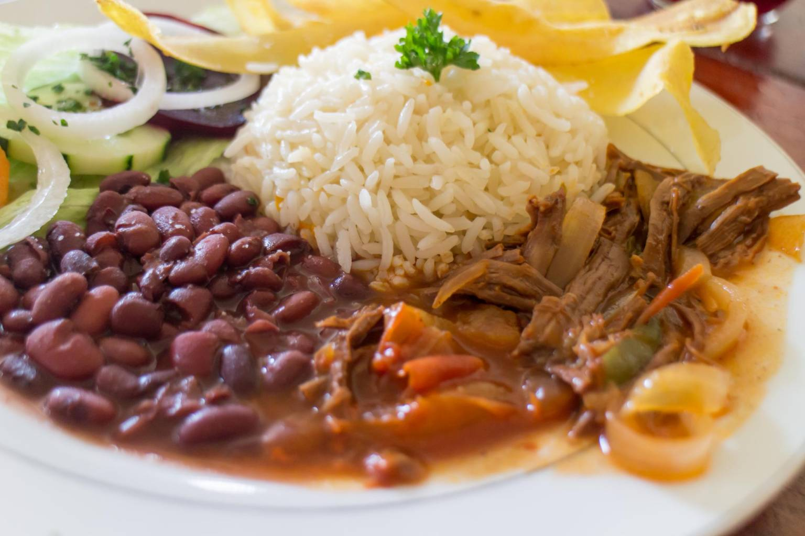
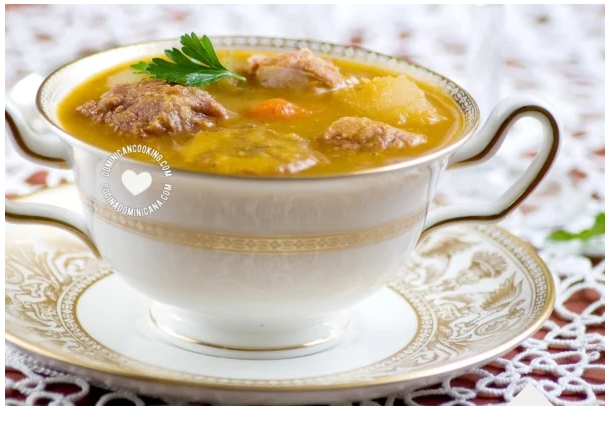
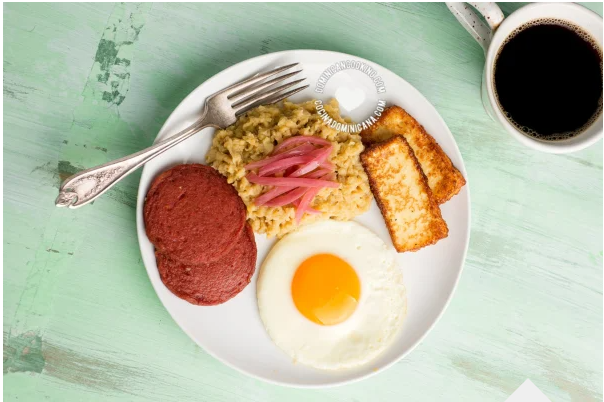
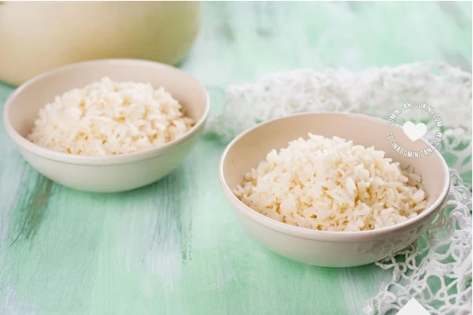
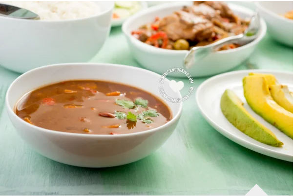

Hay algo con lo que el dominicano no come cuento: ¡su arroz con habichuelas!
El plato insignia que nos representa es una receta obligada en nuestras mesas.
Conoce la historia del plato más importante de nuestra gastronomía.
"¿Cuales son los platos y recetas más importantes de la cocina dominicana?"
Es es una pregunta que me hacen constantemente, así que decidí escribir sobre ello.
Debo empezar por decir que "importante" es quizá la palabra equivocada. Talvez "común" o
"popular" es mejor descripción. Después de todo, estos 10 platos no es todo lo que comemos,
nuestra cultura culinaria es muy rica.
Platos Dominicanos màs populares
He escogido los 10 más populares platos y comidas típicas de la cocina dominicana como una introducción a la cultura culinaria tradicional de República Dominicana, y populares desde Santo Domingo al campo más remoto.
Platos dominicanos más populares
Sancocho

Me atrevería a decir que el Sancocho es el plato oficial dominicano. La palabra sancocho (nunca "salcocho", por favor) usada para referirse a un caldo cargado de carnes,
vegetales y víveres no solo es dominicana. Varios países de Latinoamérica tienen sus versiones del sancocho. El sancocho dominicano de lujo es el de siete carnes en el que
7 tipos de carnes de 4 animales se mezclan con auyama, raíces y verduras para crear un caldo rico como no has probado antes. La versión simplificada puede contener solo res,
y quizá pollo.
Mangù

A diferencia de muchos de los platos en esta lista que tienen su contraparte en otros países del Caribe español o el resto de Latinoamérica,
el Mangú es único de la República Dominicana. Es usualmente servido con huevos fritos o revueltos, "salami" dominicano frito y queso frito, juntos
se les conoce como Los Tres Golpes. Se considera más un plato para el desayuno, pero ocasionalmente se le encuentra en la mesa de la cena. También
te contaremos sobre su historia y origen.
Arroz

El arroz es la base de la dieta dominicana. Hay un gran número de platos basados en el arroz en nuestra cocina, pero ninguno es tan común o
importante como el Arroz Blanco. Esta es la base de La Bandera Dominicana, que es como cariñosamente llamamos a nuestro almuerzo tradicional,
consistente en arroz blanco, habichuelas guisadas, pollo o res y ensalada.
Habichuelas Guisadas

Las habichuelas (o frijoles) son una fuente abundante y económica de proteína, lo que las hace un ingrediente muy popular en Latinomérica, y la
República Dominicana no es la excepción. Las Habichuelas Guisadas se sirven con el arroz, más comúnmente con arroz blanco, y forma uno de los cuartos
de La Bandera Dominicana, nuestro almuerzo tradicional. Cada hogar tiene su propia versión, con pequeños cambios en los ingredientes y cada uno seguro
de que la suya es la mejor.